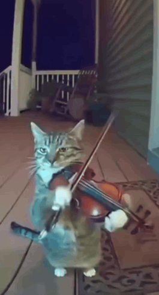
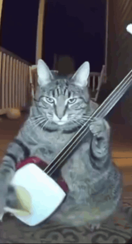
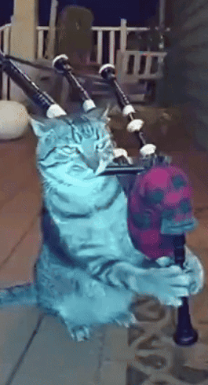

Welcome to the Homepage, meet the band
Scott, the violinist

Bob, the banjo player

Harry, the great

"There are legends of cats born with the gift of making music so true, it can pierce the veil between life and death, conjuring spirits from the past and the future." - Sinners (2025)